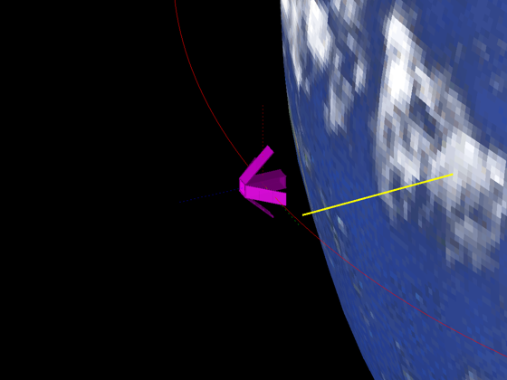

Contents
CubeSat disturbance analysis with deployable solar panels
Demonstrate how to use CubeSatDisturbanceAnalysis to calculate disturbances over an orbit. The spacecraft is nadir-pointing along a LEO orbit. This example uses a model with deployable solar panels.
See also CubeSatModel, SolarCellPower, QLVLH, CubeSatDisturbanceAnalysis, RHSCubeSat, Period, RVFromKepler, Figui, Date2JD
%-------------------------------------------------------------------------- % Copyright (c) 2017 Princeton Satellite Systems, Inc. % All rights reserved. %-------------------------------------------------------------------------- % Since version 2017.1 %--------------------------------------------------------------------------
Define and visualize the CubeSat model
Dimensions are given in mm. See SolarCellPower
d = CubeSatModel( 'struct' ); d.massComponents = 3; % 3U d.solarPanel.dim = [100 100 10]; % [side attached to cubesat, side perpendicular, thickness] d.solarPanel.nPanels = 3; % Number of panels per wing d.solarPanel.rPanel = [ 50 -50 0 0;... % Location of inner edge of panel 0 0 50 -50;... 150 150 150 150]; sTheta = sin(45*pi/180); cTheta = cos(45*pi/180); d.solarPanel.sPanel = [1 -1 0 0;... % direction of spine 0 0 1 -1;... 0 0 0 0]*cTheta; d.solarPanel.sPanel(3,:) = -sTheta; d.solarPanel.cellNormal = [1 -1 0 0;... % cell normal 0 0 1 -1;... 0 0 0 0]*sTheta; d.solarPanel.cellNormal(3,:) = cTheta; d.solarPanel.sigmaCell = [1;0;0]; % [absorbed; specular; diffuse] d.solarPanel.sigmaBack = [0;0;1]; % [absorbed; specular; diffuse] d.solarPanel.mass = 0.1; [vs, fs, d] = CubeSatModel( '3U', d ); DrawCubeSat( vs, fs, d ); DrawCubeSatSolarAreas( d ); % Introduce some CM offset (m) - optional for more interesting torques %d.surfData.cM = [0.02;0.02;0]; % Residual magnetic dipole (ATM^2) - optional %d.dipole = [0;0;0.01];
Define and visualize orbit
Initialize an equatorial LEO orbit
t = linspace(0,24,1000)*3600; % 24 hours el = [7100 0 0 0 0 0]; [r, v] = RVFromKepler( el, t ); % LVLH - aligns +z axis with nadir q = QLVLH( r, v ); % Rotate the payload down to nadir qDelta = AU2Q( pi, [1;0;0] ); for k = 1:length(t) q(:,k) = QMult(q(:,k),qDelta); end % Epoch jD = Date2JD([2013 4 2 0 0 0]) + t/86400; g = DrawSpacecraftStruct; g.name = 'Solar Wings Cubesat'; g.v = vs; g.f = fs; out = DrawSpacecraftInOrbit( jD(1), el, g, q(:,1) );
Calculate disturbances in batch
CubeSatDisturbanceAnalysis( d, q, r, v, jD );
Figui;
%--------------------------------------